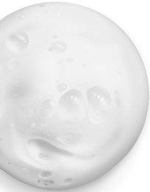
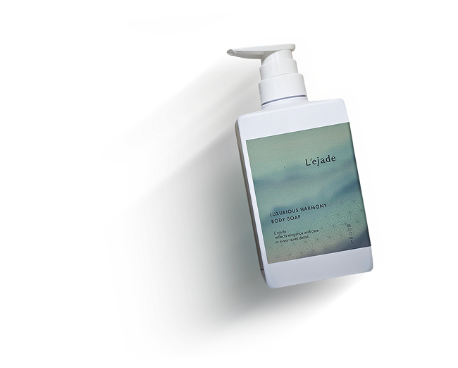

.png)
01 BALANCE
素肌を、静謐へと調律する。
洗うという行為を、ただ落とすための時間で終わらせない。
石鹸由来の洗浄力を芯に、
ベタイン系を含む複数の洗浄成分を重ねることで、泡立ち、清浄感、
そして洗い上がりのやわらかさを美しく均衡させました。
余分な汚れだけをほどき、うるおいを奪いすぎない。
その精緻な調和が、肌を本来あるべき静けさへと導いていきます。




肌と心が出会う瞬間。ここから始まる。
触れる前から、やわらぐ
こすらないという選択
残るのは、静けさ
肌を洗うという行為は、
ただ汚れを落とすだけの時間ではありません。
泡のやわらかさ。
触れるときの摩擦。
そして、静かに残る香り。
その一つひとつが重なり合うことで、
肌と心は、ゆっくりと整っていきます。
このボディシャンプーは、
その体験を 「五つの要素の調和」として設計しました。
五つの要素が、静かに表現する構造。


洗うという行為を、ただ落とすための時間で終わらせない。
石鹸由来の洗浄力を芯に、
ベタイン系を含む複数の洗浄成分を重ねることで、泡立ち、清浄感、
そして洗い上がりのやわらかさを美しく均衡させました。
余分な汚れだけをほどき、うるおいを奪いすぎない。
その精緻な調和が、肌を本来あるべき静けさへと導いていきます。


肌に求められるのは、単一の保湿ではなく、
重なり合ううるおいの層。
グリセリンやトレハロースの潤いに、アルガンオイル、
シアバター、ヒアルロン酸Naを重ね、
水分と油分が響き合う保湿設計を描きました。
洗い流したあとの肌には、
静かな艶の余韻が残ります。


真に上質なうるおいとは、
与えるだけでなく、逃がさぬことまで設計されているもの。
その思想のもと、セラミドとビタミンC誘導体を配合しました。
肌がうるおいを抱え込みやすい状態へ整え、
乾燥によって揺らぎやすいコンディションにも穏やかに寄り添います。
その静かな強さが、肌の品格をそっと守ります。

清潔感とは、強く香らせることではなく、余計な濁りを残さないことから生まれるもの。
茶葉エキス、炭、アミノ酸を軸に、清浄補助成分を丁寧に重ねました。
洗い上がりに残るのは、過剰な演出ではなく、
静かに磨かれた清潔感の余韻です
清潔感とは、強く香らせることではなく、余計な濁りを残さないことから生まれるもの。
茶葉エキス、炭、アミノ酸を軸に、清浄補助成分を丁寧に重ねました。
洗い上がりに残るのは、過剰な演出ではなく、
静かに磨かれた清潔感の余韻です
ベルガモットの澄んだ光からはじまり、
ミューゲ、マグノリア、ヒヤシンスの花々がほどけ、
やがてサンダルウッドの穏やかな深みへと移ろいます。
華やかに主張する香りではなく、
立ち去ったあとに残る余韻。
その静かな香りが、
肌に品格を纏わせます。
STEP 1
目安は1〜1.5プッシュ。 過不足なく満たすことが、調和のはじまり。
STEP 2
空気を含ませたやわらかな泡が、肌をそっと受け止める。
摩擦を感じさせない所作が、穏やかな洗い上がりへ導く。
STEP 3
きめ細かな泡が、不要なものだけを洗い流し、 必要なうるおいはそっと残す。
泡の余韻を、やさしく受け止めるために。
L’ejade専用タオルをお届けします。
やわらかな繊維が肌をいたわり、
最後の所作まで、調和を保つ。

ラグジュリアスハーモニー
L'ejade Body Soap
L’ejadeは、“肌への敬意”を込めて成分を選択しています。 必要なものだけを選び抜き、過剰な刺激を与えない設計。

単なる無添加ではなく、
“肌への敬意”から生まれた処方思想です。
よくあるご質問
L’ejadeは、保湿感と清浄感の両立を目指し、成分のバランスに配慮して設計しています。 シア脂やアルガンオイルなどの保湿成分を配合し、洗い上がりのつっぱり感を感じにくい処方に整えました。 また、肌への負担を考慮し、4つのフリー設計（パラベン・アルコール・鉱物油・シリコン不使用）を採用しています。 ※すべての方に刺激が起こらないわけではありません。
L’ejadeは、保湿感と清浄感の両立を目指し、成分のバランスに配慮して設計しています。 シア脂やアルガンオイルなどの保湿成分を配合し、洗い上がりのつっぱり感を感じにくい処方に整えました。 また、肌への負担を考慮し、4つのフリー設計（パラベン・アルコール・鉱物油・シリコン不使用）を採用しています。 ※すべての方に刺激が起こらないわけではありません。
L’ejadeは、保湿感と清浄感の両立を目指し、成分のバランスに配慮して設計しています。 シア脂やアルガンオイルなどの保湿成分を配合し、洗い上がりのつっぱり感を感じにくい処方に整えました。 また、肌への負担を考慮し、4つのフリー設計（パラベン・アルコール・鉱物油・シリコン不使用）を採用しています。 ※すべての方に刺激が起こらないわけではありません。
L’ejadeは、保湿感と清浄感の両立を目指し、成分のバランスに配慮して設計しています。 シア脂やアルガンオイルなどの保湿成分を配合し、洗い上がりのつっぱり感を感じにくい処方に整えました。 また、肌への負担を考慮し、4つのフリー設計（パラベン・アルコール・鉱物油・シリコン不使用）を採用しています。 ※すべての方に刺激が起こらないわけではありません。